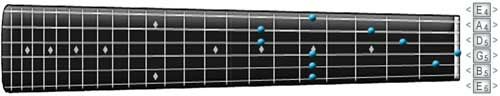
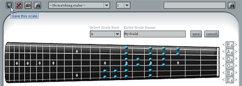
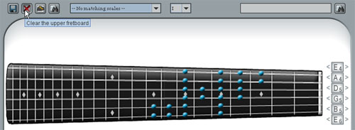

LinksAbout Guitar Scale Assistant Getting Started Using the Clickable Fretboard Searching for Scales Viewing Scales Using the Tuners Using the Audio Interface |
Using the Clickable Fretboard Fig. 2 The clickable fretboard The clickable fretboard has a simple interface. Left-click on a string and fret to add a note to the fretboard. Right-click on a note to remove it from the fretboard. You can also tune the clickable fretboard by clicking on the tuners left (tune down) or right (tune up) arrows. To tune the guitars back to standard tuning, click the Edit -> Tune Guitars Standard menu or load preset tunings from the Tune menu. Creating and Saving a New Scale Fig. 3 Saving a scale Once you have all the notes on the fretboard for a scale, you can click the File -> Save Scale menu or use the "Save Scale" icon shown above. Once you have selected one of these options, a save interface (shown above) will appear, allowing you to pick the root note for your scale and enter a name for the scale. You can then cancel out of this or save off your new scale to the current list of scales. Once saved, your new scale will be available in the list of searchable and viewable scales. Clearing the Fretboard Fig. 4 Clearing the fretboard You can clear the fretboard at any time by clicking either the Edit -> Clear Uppder Fretboard menu or the "Clear Fretboard" icon shown above. The Edit menu also has an option to clear the lower display fretboard. < Prev | Next > |